案例库/完整蓝皮书
ADPS 企业 Agent 系统蓝皮书 · 案例报告 03
自然语言到 SysML：一张图交付的建模 Agent
模型在有界范围内起草类型化结构，程序通过语义门禁和单一写回通道保护工程模型库。
证据边界： 本文记录 Ark · 雅格 AI4MBSE 的一线实践。系统路径、失败现象与工程取舍由案例方提供，尚未经过独立审计。界面示意图用于说明交互与状态，真实截图和演示视频已获案例方同意发布。文中的数据契约是 ADPS 依据公开机制做的架构级还原，不代表案例方的实际类名或字段名。
1. 系统边界：交付物是工程状态
AI4MBSE 运行在 MagicDraw、Cameo 一类系统建模工具的工程环境中。包、块、用例、状态和关系都会进入正式模型库，并被后续设计、仿真、评审和文档引用。一次 Agent 写回会改变这个共享状态。
SysML 的模型库与图是两层结构。模型库保存元素和关系，图是其中一部分内容在特定关注点下的投影。图上看得见的结果可能正常，模型库中仍可能存在悬空引用、错误归属或重复元素。验收因此需要同时检查模型状态和画布结果。
案例方的设计边界很明确：LLM 负责理解业务表述并起草候选结构，程序与工程索引保管挂载位置、稳定标识、关系端点和写回权限。这些字段错一位就会影响下游，不经过模型自由生成。
用户用自然语言指定一张图；系统在已确认的位置写入结构正确、可撤销的结果；范围或结构无法确定时，进入澄清或阻断。
2. 运行例：一句话创建“闸机控制”用例图
本文用一条简化指令贯穿后续设计。
在“闸机控制”包下建一张用例图：访客刷卡进门、管理员远程开闸、运维人员复位故障。访客和管理员是人，运维是运维系统。
这条指令至少包含四类约束。
| 约束 | 本例的内容 | 校验点 |
|---|---|---|
| 挂载位置 | 已有“闸机控制”包 | 工程索引能否唯一解析 |
| 元素集 | 3 个用例、2 个人类参与者、1 个系统参与者和 1 个主体 | 数量、类型、归属是否完整 |
| 关系集 | 参与者与对应用例之间的关联 | 两端是否都已存在 |
| 视图集 | 与本用例图有关的主体、参与者、用例和关系 | 进图集合是否为模型结果的合法投影 |
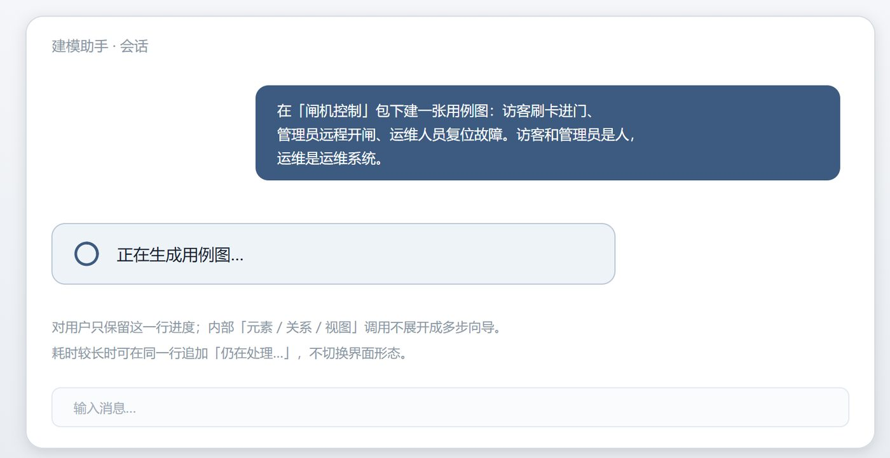
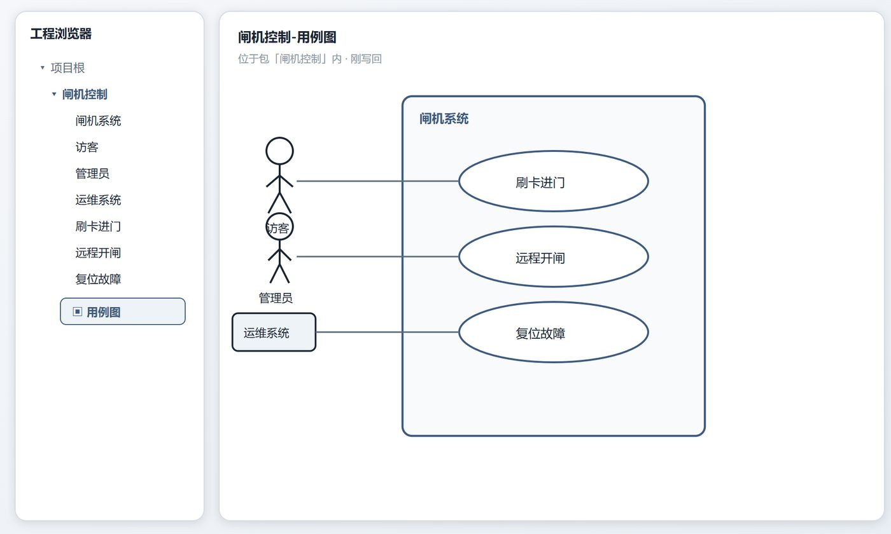
3. 主链：从自然语言到类型化中间表示
早期实现让模型在一次调用中输出元素、关系和视图。失败主要集中在四处：关系引用了元素清单中不存在的名称，同一对象出现近义命名，长上下文导致后半段漏项，视图筛选与模型内容不一致。单次调用数减少了，但失败后需要重做整份结构，定位也缺少阶段边界。
当前主链按建模语义拆成三段。
| 阶段 | 输入 | 输出契约 | 不允许做的事 |
|---|---|---|---|
| 元素 | 用户摘要、已解析范围、元素白名单、邻近可复用集合 | ElementPlan |
生成关系或布局 |
| 关系 | ElementPlan、关系白名单、短业务摘要 |
RelationPlan |
创建表外元素或改写稳定标识 |
| 视图 | ElementPlan、RelationPlan、图类型投影规则 |
ViewPlan |
重新发明模型结构 |
按案例机制还原，一次运行至少需要下列作业状态。这是架构级示意，用于表达契约，不是案例方实际源码。
ModelingJob
action: chat | create | modify
diagram_type: use_case | bdd | ibd | state | ...
scope_ref: stable project reference | pending
stage: intent | elements | relations | view | validated | applied
element_plan: typed elements with stable references
relation_plan: typed edges whose endpoints resolve
view_plan: projection over accepted elements and relations
outcome: applied | applied_with_warnings | blocked | noop
writeback_receipt: state delta + rollback handle
ADPS 将 ElementPlan → RelationPlan → ViewPlan 解读为一条类型化中间表示（typed intermediate representation, IR）链。LLM 在每个阶段产生候选 IR，下游只读取已验收的上游结果。这个结构接近编译器的前端、中间表示和语义检查，也接近数据库的引用完整性约束。
三段可以由三个独立 Agent 执行，也可以由一个运行时内的三个函数完成。案例能力来自输入边界和数据契约，进程数量不是判定条件。若实现方案没有上下文隔离、独立失败和责任分界，就不应为了形式把三段称为多 Agent。
4. 一次一图：单次事务与验收单元
“完成闸机系统模型”没有稳定的完成定义。它可能包含包图、需求图、用例图、块定义图、内部块图和状态图，且前面的偏差会传递到后续步骤。案例方将单次交付约束为：
一次用户操作 = 一种图类型 + 一个已解析的挂载位置。
这条约束定义了本轮可修改的范围、写回前的验收集合、撤销所需的变更集，以及可回归测试的最小操作。从软件工程角度看，它是 Unit of Work 和 Command 的组合，承担实现和测试中的事务边界。
案例复盘记录了“确定性门禁通过后默认写回，并提供一步撤销”的交互路径。对外产品页同时强调人员确认后写回。两种策略可按部署环境和写操作风险设置，但共用同一个事务边界、门禁和撤销回执。蓝皮书不把其中一种交互策略写成唯一答案。
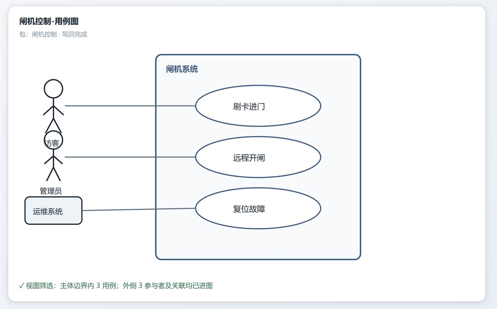
5. 范围解析与可续跑的 HITL
当“闸机控制”包无法在工程索引中唯一命中时，系统不进入元素规划。候选项较少时，界面列出候选位置；无合理候选时，要求用户提供更精确的包名或先创建范围。系统不默认写到项目根目录，也不自动生成父包树。
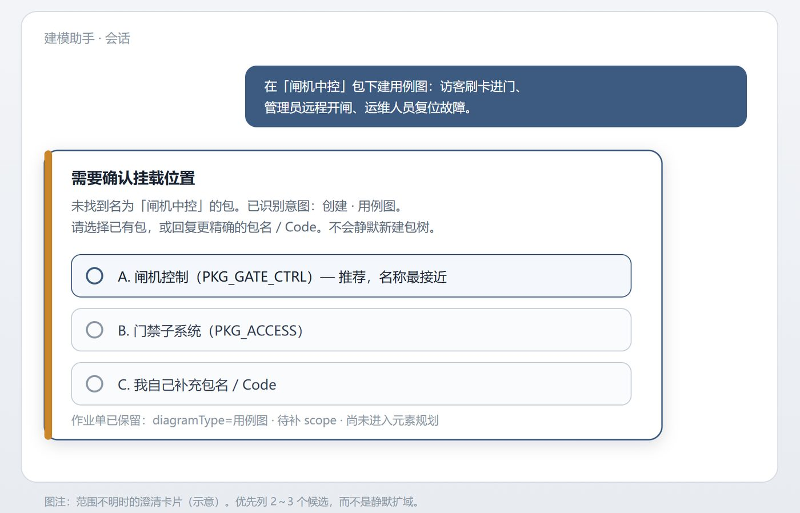
这个交互需要一个持久化的 pending operation。它保存已解析的 action、diagram_type、待补的 scope_ref、当前阶段和用户的处理选项。用户补充包名后，运行时调用 ResumePendingOperation，不重新做一次完整意图分类。
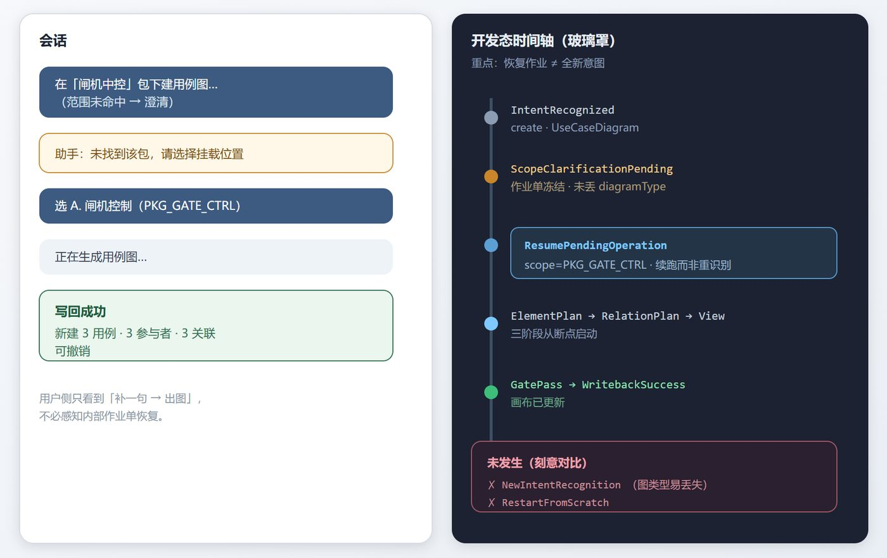
HITL 在这里是一种可恢复事务。弹窗只负责收集缺失信息，正确性取决于作业单能否冻结、持久化和从指定断点恢复。
6. 写回门禁：不变量、结果状态与回执
案例方将常见失败分为空变更假成功、关系悬空、明确列举项漏失、视图与模型不一致，以及编造挂载位置或复用对象。门禁用一组可复验的不变量检查这些失败。
| 不变量 | 检查内容 | 失败处理 |
|---|---|---|
| 范围唯一 | scope_ref 指向已有、允许写入的工程对象 |
澄清或阻断 |
| 类型合法 | 元素、关系和图类型命中当前 Profile 白名单 | 唯一可修复时修复，其余阻断 |
| 引用闭包 | 每条关系的两端都在已验收元素集或可复用集合中 | 阻断 |
| 明示完整性 | 用户可计数列举的对象与计划数量一致 | 写前澄清或用户确认跳过 |
| 视图子集 | 进图元素和关系属于已验收模型结果 | 剔除或阻断 |
| 变更一致 | 写入请求产生可观察增量，或明确判定为幂等 noop |
空增量不得返回成功 |
| 单一写回 | 模型库和视图更新经过唯一通道，同时生成回执和撤销句柄 | 不允许部分成功对外冒充完整成功 |
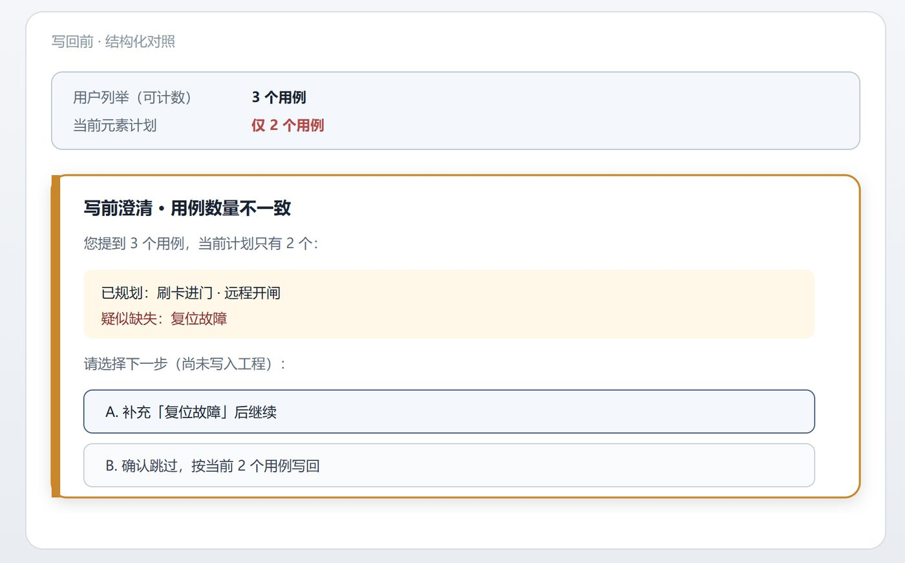
用户可见的结果可归纳为四种状态。
| 状态 | 写入 | 语义 |
|---|---|---|
APPLIED |
是 | 计划、门禁和写回回执一致 |
APPLIED_WITH_WARNINGS |
是 | 主结构合法，存在已指名且可继续处理的非破坏性缺项 |
BLOCKED |
否 | 不变量不成立，工程状态保持原样 |
NOOP |
否 | 目标状态已存在，或本轮没有可写增量；两种原因需分开记录 |
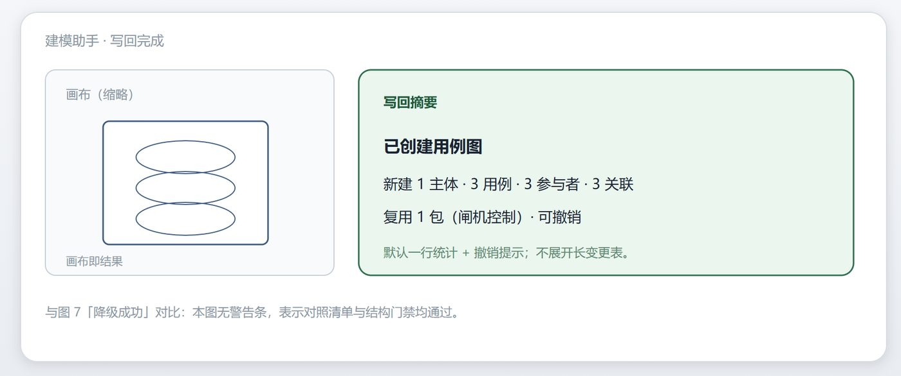
APPLIED：摘要记录实际变更量和撤销入口。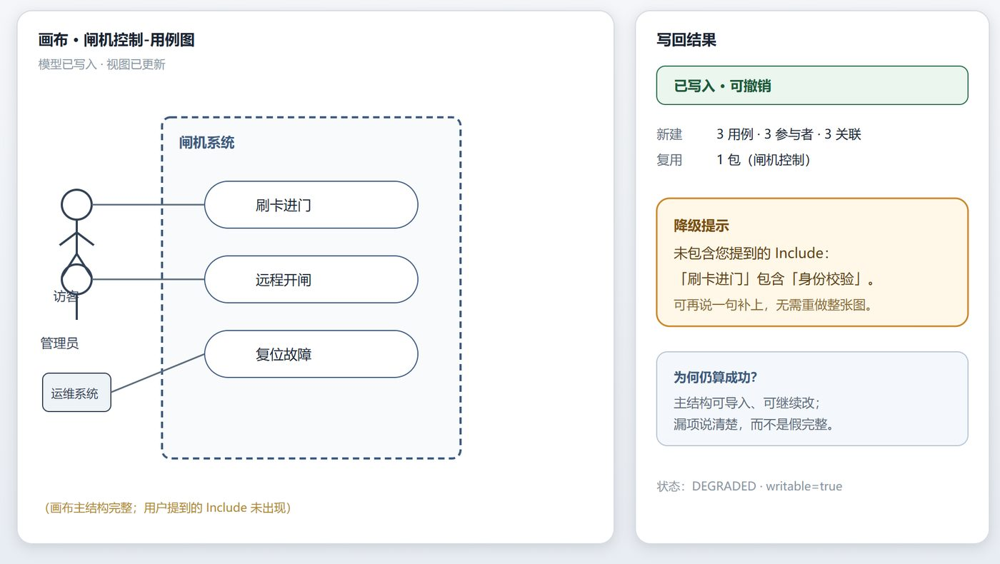
APPLIED_WITH_WARNINGS：已写入的部分可用，缺失项被指名记录。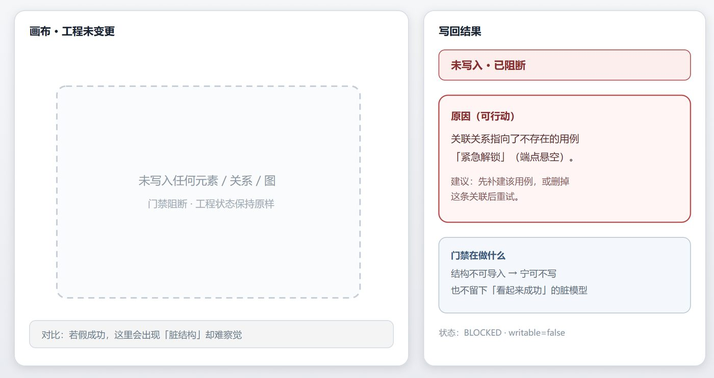
BLOCKED：无写入，原因可用于修正输入或工程状态。7. 确定性验证与模型反思的选择
案例方早期测试过“生成、模型评审、修改、再评审”。公开复盘记录了三个问题：评审提示与工具 schema 的口径不一致，调用时延和成本增加，长评论没有直接提高写回的可用性。团队取消了写回后的模型自评循环，在组装前保留最多一次有界修复，然后由确定性门禁决定是否写入。
这一取舍有明确的适用条件。
| 问题属性 | 更合适的机制 |
|---|---|
| 类型、引用、范围、数量和实际变更可由程序判定 | 同步门禁 |
| 写操作有副作用，用户正在等待，错误需当场阻断 | 同步门禁加事务回执 |
| 语义品质无法由规则完整表达，且输出尚未产生副作用 | 生成批评或人审 |
| 错误需要跨运行累积后才能归纳 | 失败日记、经验回放或离线分析 |
门禁和反思不互相排斥。本案例把写回准入交给门禁，并不能推导出“结构化工件都不需要反思”。当团队要分析跨项目的漏项分布、优化 Profile 或评估建模粒度时，离线反思仍然有位置。选择依据是错误的可判定性、副作用、修复窗口和时延约束。
8. 类型等价层：规划词表与工具元模型对齐
案例方发现，建模工具的导入层有时会把细类型归并为粗类型。LLM 计划使用业务细名，工具 API 使用元模型名，写回后还可能返回另一个归一化名称。直接做字符串全等比较会误杀合法结果，也可能将粗类型放进错误的图类型。
稳定的实现需要一个显式类型等价层。
planning type
-> canonical domain type
-> host metamodel type
-> write-back type returned by the tool
该层按图类型和宿主适配器选择映射，保留原始类型与归一化类型，供日志和回归测试对照。问题被收敛到 adapter 和 profile，主编排不需依靠行业词表或大量 if-else 猜测语义。
这个细节是案例中很有价值的工程证据。日志可能把故障表现为“模型选错类型”，实际原因却在语义适配层。没有这层记录，团队很容易把确定性转换 bug 误判为 LLM 幻觉。
9. 上下文与模型路由
工程规模增长后，九类图的规则、历史对话和完整工程树不适合每次一起进入模型。案例方采用以下约束。
- 当前运行只注入当前图类型的 Profile。
- 业务理解形成一次稳定摘要，关系和视图阶段读取摘要与上游 IR。
- 工程上下文按远近分层。远端保留会话进度与项目约束摘要，近端提供邻近包、块和可复用元素的有界投影。
- 意图、澄清和简单结构填充可使用轻量模型，元素与关系规划使用主模型，视图筛选能规则化时交给程序。
- 包图、需求图与状态图、时序图使用不同复杂度路由，但共用同一组写回不变量。
这些做法缩小了每次决策的输入面。案例方报告其稳定性和成本优于单次生成后整轮重试的早期实现，但未公布 token、时延或成功率的对照数据。蓝皮书因此将其记为实践判断，不写成量化结论。
10. 公开运行证据
本节区分界面示意与真实运行记录。示意图用于表达交互和状态语义，不是生产界面截图。下面的宿主环境、日志、模型图和视频来自案例方运行环境。
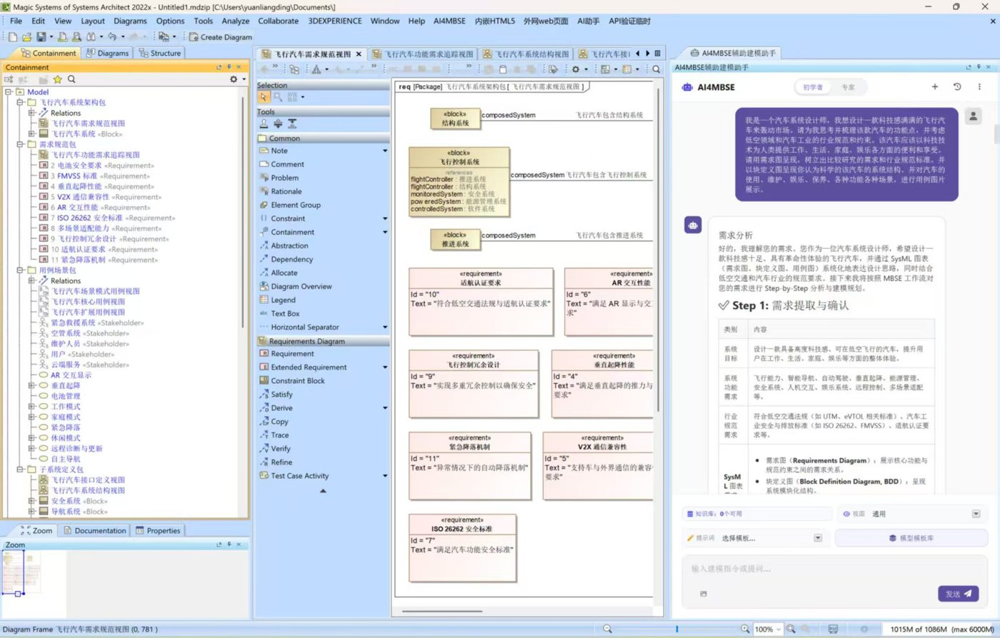
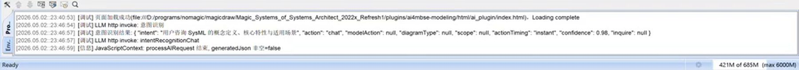
action=chat，diagramType、scope 和 modelAction 为 null，confidence=0.98，generatedJson 非空=false。这个记录支持一条有限结论：该次咨询没有进入写回主链。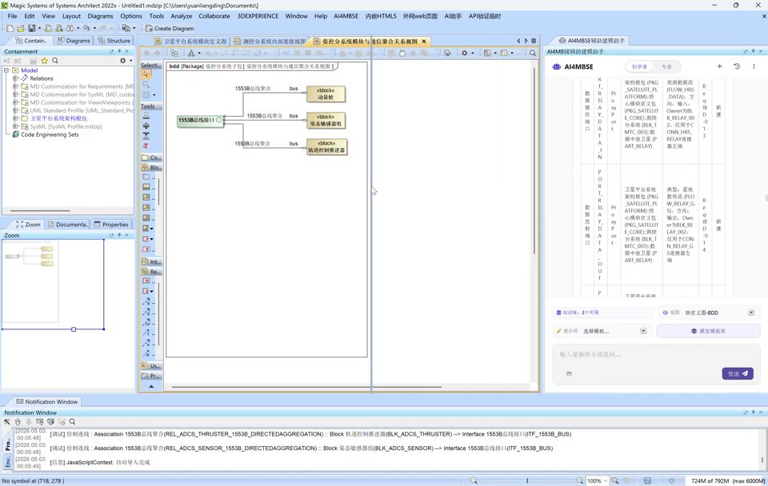
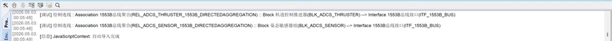
REL_ADCS_THRUSTER_1553B_DIRECTEDAGGREGATION 连接 BLK_ADCS_THRUSTER 与 ITF_1553B_BUS。记录证明实际写回使用稳定标识，但单张截图不能代替整体成功率评估。11. 评估协议：已公开证据与待补数据
当前公开材料足以说明架构路径、部分中间结构和实际宿主写回。它们还不足以证明系统在多项目、多图类型和长时间运行下的稳定性。
| 主张 | 当前公开证据 | 证据状态 |
|---|---|---|
| 咨询请求可以绕开建模写回链 | 意图日志显示 action=chat 且无生成 JSON |
有单次运行记录 |
| 关系写回使用稳定结构标识 | 关系与端点日志截图 | 有单次运行记录 |
| 系统已嵌入建模工具并完成多轮演示 | 宿主截图和两段视频 | 可视证据 |
| 三段链比单次生成更稳、更省 | 案例方复盘 | 尚无公开对照数据 |
| 门禁能长期降低脏写入 | 失败类型与对应机制 | 尚无长期事故统计 |
后续版本建议以固定测试集记录以下指标。每项指标都需按图类型、新建/修改、专家/初学者模式和宿主工具分层，避免用一个总成功率掩盖差异。
| 指标 | 定义 |
|---|---|
| 范围解析准确率 | 自动命中的 scope_ref 中，经人员复核正确的比例 |
| 元素清单召回率 | 用户明确点名的元素中，进入已验收 ElementPlan 的比例 |
| 悬空引用逃逸数 | 写回后才发现的无效关系端点数，目标值为 0 |
| 静默扩域事故数 | 未经确认新建包、移动归属或写入错误范围的次数 |
| 假成功率 | 系统返回成功，但写回回执为空或结构验收失败的比例 |
| 澄清续跑正确率 | 用户补充范围后，保留原操作和图类型并从指定阶段继续的比例 |
| 撤销完整率 | 撤销后工程库和画布都恢复到写回前状态的比例 |
| 阶段成本 | 意图、元素、关系和视图阶段的 token、时延、重试和模型费用 |
| 门禁质量 | 各规则的拦截率、误拦率与修复成功率 |
这份协议将“看起来能用”转化为可比较的系统证据。蓝皮书的下一个版本应优先增加这类数据，而不是增加更多架构形容词。
12. ADPS 模式映射
本案例的证据集中在行动和治理。ADPS 只将有公开机制支撑的坐标列为主要落位，没有为了填满矩阵而推定其他模式。
| 模式 | 案例证据 | 边界 |
|---|---|---|
| A3 提示链 | 元素、关系、视图三段契约链 | 阶段可以是函数或 Agent |
| A4 护栏三明治 | 范围门、阶段契约和写回门禁 | 门禁验证结构，不评价全部建模品质 |
| G2 爆炸半径控制 | 一次一图、单一写回通道、可撤销变更集 | 项目级并发写入策略未公开 |
| G1 审批门 | 范围不明时澄清；产品化路径支持人员确认后写回 | 确认策略可随部署风险调整 |
| M3 进度追踪 | pending operation 保存图类型、范围和当前阶段 | 公开材料未提供跨进程故障恢复数据 |
| R2 复杂度路由 | 轻重模型分流与按图类型选择执行深度 | 路由阈值和模型对照数据未公开 |
| G4 可观测性 | 阶段输入输出、门禁裁决和写回日志 | 当前证据主要来自开发态界面 |
P1 上下文分诊、P2 语义压缩 和 A1 工具调度 也有相关机制，但公开材料对它们的代码实体和运行指标描述较少，本版不将其列为主要落位。只有当元素、关系和视图阶段以独立 Agent 实现，并具有上下文隔离和独立失败语义时，才适合增加 C4 交接链 的落位。
13. 三份蓝皮书的共性与差异
三份案例都将高精度结构坐标从模型生成内容中分离，但它们使用了不同的执行和验证时机。
| 案例 | 程序保管的结构坐标 | 验证时机 | 修复窗口 |
|---|---|---|---|
| 报告 01 · 东方屹腾 | 业务 ID、状态来源与流程节点 | 步骤调度和业务调用前后 | 会话内暂停、审批和恢复 |
| 报告 02 · 玄宿科技 | workspace、store、SRS、bbox 和管线状态 | 静态六阶段管线中的外部探针 | 运行期规则回退与跨运行失败沉淀 |
| 报告 03 · Ark · 雅格 | 挂载位置、稳定标识、关系端点与类型映射 | 交互回合内的写回前门禁 | 有界修复、澄清、阻断或撤销 |
这三份报告支持一条可供后续案例检验的工程命题：精确结构坐标应由可追溯的程序状态传递，该状态保留坐标的权威事实，模型输出提供候选计划。它仍是一条跨案例观察，尚未经过统计显著性检验。
三份报告的差异也给出了更精确的选型方法。验证机制应根据外部可观测性、副作用、用户等待时间和修复窗口选择。能在调用前由程序判定的问题优先进入同步门禁，只能在运行后由外部结果判定的问题进入验收探针，需要跨运行学习的问题再进入失败日记或离线反思。
14. 迁移边界与 SysML v2
该设计适合以下系统：产出需进入正式库，存在类型和引用约束，写入会影响存量工程，工具接口和进图规则可以被管理。EDA、BIM、ERP 主数据、CMDB 和工艺路线编排都具有相似的局部条件。迁移时应保留四个核心结构：类型化 IR、稳定结构引用、确定性验证和带回执的单一写入通道。
以报告、课件、开放检索结果为主要产出，且重写成本较低的场景，不需要复制整套写回门禁。其他两个限制也需要保留。第一，当前公开证据主要来自演示工程，不能代表大型安全关键项目的认证结果。第二，大团队同时写入、模型分支合并、权限分区和长事务补偿没有在公开材料中展开。
OMG 于 2025 年完成 SysML 2.0 正式规范，并同时推进 Systems Modeling API and Services。SysML v2 提供更精确的语义基础、文本表示和标准化模型访问接口；OMG 也预计 SysML v1 将在迁移期继续使用多年。这意味着 AI4MBSE 在一段时间内仍需同时面对现有桌面工具和 SysML v2 工具链。标准 API 可以缩小专有适配面，但不会取消范围解析、引用完整性、Profile 政策和事务回执。详见 OMG SysML 2.0 规范 与 OMG SysML 版本说明。
15. 案例方与引用
本案例来自 Ark · 雅格，成都。创始人袁良锭（Liangding Yuan）拥有十六年工业软件与平台研发经验，曾从事流程、搜索、协作与知识系统开发，当前聚焦 AI 辅助 SysML / MBSE 产品化。
Ark · 雅格的公开产品包括 AI4MBSE、面向建模任务的工程知识库，以及 MagicGrid、OOSEM 和 Harmony-SE 方法配置。AI4MBSE 的公开产品页列出 MagicDraw、Cameo、Capella 和 SysON 宿主适配，并将 SysML v2 API 列为产品化方向。
案例提供：袁良锭（Liangding Yuan），Ark · 雅格创始人。原始技术复盘由案例方撰写；本版按 ADPS 蓝皮书体例重组，第 3、6、11、12、13 节包含 ADPS 的契约还原、评估协议和跨案例分析。
建议引用：ADPS、Liangding Yuan，《自然语言到 SysML：一张图交付的建模 Agent》，ADPS 企业 Agent 系统蓝皮书·案例报告 03，v0.4，2026。